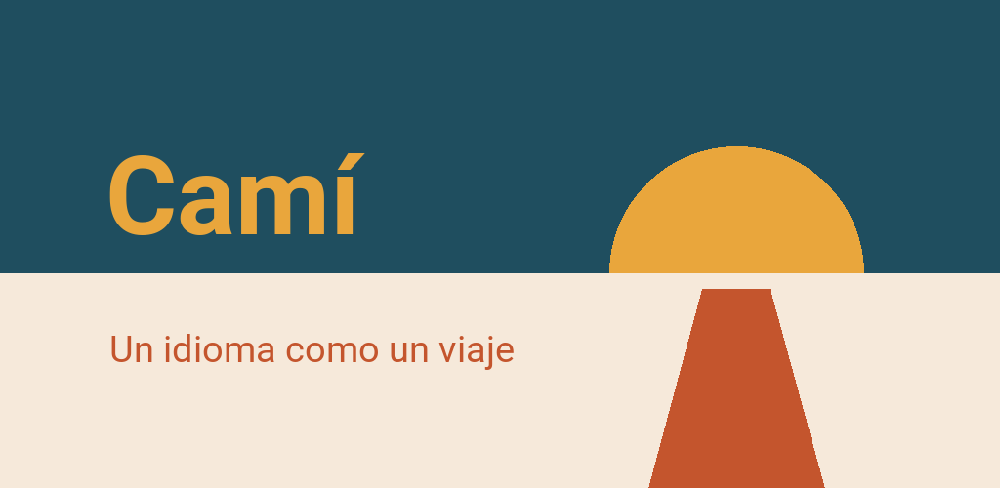

Camí – Aprende idiomas
Aprende islandés, catalán, euskera, croata, danés y más — sin cuenta
Para Android 7 o posterior


Camí es una app para aprender idiomas construida como un viaje. Cada etapa es un lugar real: Barcelona, el delta del Ebro, la Serra de Tramuntana. Al terminar una etapa recibes una pequeña recompensa: un refrán, una receta, una escena en ese lugar o una postal que se queda como fondo de la app.
En español: diez idiomas
- Catalán: Cataluña, Mallorca, Comunidad Valenciana — 55 etapas
- Polaco: la Pequeña Polonia, los Cárpatos, Mazovia, el Báltico — 55 etapas
- Danés: Copenhague, las islas, Jutlandia — 55 etapas
- Griego: Atenas, el Peloponeso, Creta, las Cícladas — 37 etapas
- Croata: Istria, Dalmacia, Zagreb — 37 etapas
- Islandés: la vuelta a la isla — 37 etapas
- Italiano: la Toscana, Umbría, el Lacio — 52 etapas y creciendo
- Euskera: Bizkaia y Gipuzkoa — 31 etapas y creciendo
- Coreano: Seúl, la región de la capital y Gangwon — 49 etapas y creciendo
- Esloveno: Liubliana y la Gorenjska — 28 etapas y creciendo
Los cursos de 55 etapas tienen A1 y A2 completos y las primeras etapas de B1 y B2; los de 37, A1 completo y las primeras de cada nivel siguiente. Los otros tres cursos de Camí — francés, alemán e inglés — se explican en otros idiomas. La app te los enseña igualmente y te dice en qué idiomas puedes hacerlos, en vez de esconderlos. Y cambiar el idioma de las explicaciones no te cuesta ni un punto de progreso.
Qué incluye
- Nueve tipos de ejercicio: elección, huecos, parejas, construir frases, escuchar, clasificar, transformar, leer y diálogos — a partir de A2, los huecos y los dictados se escriben en vez de tocarse
- Una historia para escuchar al final de cada etapa: gente del lugar conversando, leída línea a línea, con preguntas por el camino
- Ejercicios de pronunciación: Camí te escucha y te muestra cuánto coincide (catalán, inglés, alemán e italiano)
- Un esqueleto de gramática: cada forma tiene su etapa, con la regla, ejemplos y una sección de consulta
- Tarjetas de repaso con intervalos crecientes, hechas con las lecciones que ya has terminado
- Un mapa dibujado a mano de tu viaje, con información de cada región
- Una prueba de nivel, si no empiezas de cero
- Objetivo diario, objetivo semanal y una racha — sin cronómetros y sin vidas que perder
- Una clasificación voluntaria con un apodo, sin cuenta
Sin cuenta, sin conexión
Camí no pide registro. Los cursos y los mapas van incluidos; las fotos, las voces y el paquete de voz para la pronunciación llegan con el curso desde Google Play. Tu progreso se queda en tu móvil. Sin publicidad, sin rastreo, sin compras. Por su cuenta, la app solo sale a internet si tú quieres: para participar en la clasificación o para enviar un error con «Comentarios».
Todo se lee con las voces propias y naturales de Camí, en todos los idiomas menos el euskera. En los ajustes puedes elegir la voz de tu teléfono.